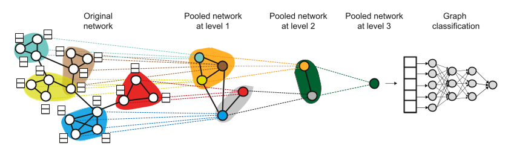

Hierarchical Graph Representation Learning with Differentiable Pooling
Hierarchical Graph Representation Learning with Differentiable Pooling
Abstract
最近，图神经网络 (GNN) 通过有效学习节点嵌入，彻底改变了图表示学习领域，并在节点分类和链接预测等任务中取得了最先进的成果。
然而，当前的 GNN 方法本质上是扁平的，并且不学习图的层次表示——这一限制对于图分类任务尤其成问题，其目标是预测与整个图关联的标签。
在这里，我们提出了 DIFFPOOL，这是一种可微分图池化模块，可以生成图的层次表示，并且可以以端到端的方式与各种图神经网络架构相结合。
DIFFPOOL 为深度 GNN 的每一层的节点学习可微的软集群分配，将节点映射到一组集群，然后形成下一个 GNN 层的粗化输入。
我们的实验结果表明，与所有现有的池化方法相比，将现有的 GNN 方法与 DIFFPOOL 相结合，在图分类基准上的准确率平均提高了 5-10%，在五分之四的基准数据上实现了新的最先进水平。
3.Proposed Method
DIFFPOOL 的关键思想是
它通过为分层池化图节点提供可微分模块来构建深层的多层 GNN 模型
在本节中，我们概述了 DIFFPOOL 模块并展示了它是如何应用于深度 GNN 架构的。
3.1Preliminaries
我们将图 G 表示为（A,F）
\(A \in \left\{ 0,1 \right\}^{n \times n}\) 是邻接矩阵
\(F \in R^{n \times d}\)是节点特征矩阵
假设每个节点有 d 个特征
给定一个集合 标记图 D = {(G1, y1), (G2, y2), ...}
其中 yi ∈ Y 是图 Gi ∈ G 对应的标签，图分类的目标是学习映射 f : G → Y 将图形映射到标签集。
与标准的监督机器学习设置相比，挑战在于我们需要一种从这些输入图中提取有用特征向量的方法。
也就是说，为了将标准机器学习方法应用于分类，例如神经网络，我们需要一个程序将每个图转换为 \(\mathbb{R}^D\) 中的有限维向量。
3.1.1 Graph neural networks.
在这项工作中，我们建立在图神经网络之上，以便以端到端的方式学习用于图分类的有用表示。
特别是，我们考虑采用以下通用“消息传递”架构的 GNN： \[ H^{(k)} = M(A,H^{(k-1)};\theta^{(k)}) \] 其中
\(H^{(k)} \in R^{n \times d}\) 是在 GNN 的 k 步之后计算的节点嵌入（即“消息”）
M 是消息传播函数，它取决于邻接矩阵、可训练参数 \(\theta^{(k)})\) 和 从前一个消息传递步骤生成的节点嵌入 \(H^{(k-1)}\)
- 在初始消息传递迭代 (k = 1) 处的输入节点嵌入 \(H^{(0)}\) 使用图上的节点特征进行初始化， \(H^{(0)}\) = F
传播函数 M有许多可能的实现
例如，GNN 的一种流行变体Graph Convolutional Networks (GCNs)——使用线性变换和 ReLU 非线性的组合来实现 M： \[ H^{(k)} = M(A,H^{(k-1)};W^{(k)})=ReLU(\widetilde{D}^{-\frac{1}{2}}\widetilde{A}\widetilde{D}^{-\frac{1}{2}}H^{(k-1)}W^{(k-1)})) \]
- A表示邻接矩阵
- \(\widetilde{A}\) = A + \(I_N\) 邻接矩阵+对角矩阵
- D表示度矩阵 \(D_{(i,i)}\)表示结点i的度
- \(\widetilde{D}\)表示\(\widetilde{A}\)的度矩阵
- \(\widetilde{D} = \sum_j\widetilde{A}_{ij}\)
- \(H^l\)表示第l层的结果
- \(W^l \in \mathbb{R}^{d \times d}\)表示权重
我们提出的可微池化模型可以应用于任何实现等式 \(H^{(k)} = M(A,H^{(k-1)};\theta^{(k)})\) 的 GNN 模型，并且与 M 的实现方式的细节无关。
一个完整的 GNN 模块将运行等式 \(H^{(k)} = M(A,H^{(k-1)};\theta^{(k)})\) 的 K 次迭代以生成最终输出节点嵌入\(Z=H^{(k)}\in R^{n\times d}\)
其中 K 通常在 2-6 范围内
为简单起见，在以下部分中，我们将抽象出 GNN 的内部结构，并使用 Z = GNN(A, X) 来表示任意 GNN 模块，根据一些邻接矩阵 A 和初始输入节点特征实现 K 次消息传递迭代 X
3.1.2 Stacking GNNs and pooling layers
实现等式 (1) 的 GNN 本质上是扁平的，因为它们只在图的边缘传播信息。
这项工作的目标是定义一种通用的端到端可微策略，允许以分层方式堆叠多个 GNN 模块。
形式上，给定 Z = GNN(A, X)
GNN 模块的输出和图邻接矩阵 \(A\in R^{n \times n}\)，我们寻求定义一种策略来输出包含 m < n 个节点的新粗化图，
加权邻接矩阵\(A' \in R^{m \times m}\)和节点嵌入 \(Z' \in R^{m\times d}\)。
然后，这个新的粗化图可以用作另一个 GNN 层的输入，整个过程可以重复 L 次，生成一个具有 L 个 GNN 层的模型
该模型对输入图的一系列更粗略的版本进行操作（图 1）

因此，我们的目标是学习如何使用 GNN 的输出将节点聚集或汇集在一起，以便我们可以使用这个粗化图作为另一个 GNN 层的输入。
与通常的图粗化任务相比，为 GNN 设计这样一个池化层特别具有挑战性的原因是
我们的目标不是简单地将节点聚集在一个图中，而是提供一个通用的方法来在广泛的集合中分层池化节点输入图
也就是说，我们需要我们的模型来学习一种池化策略，该策略将泛化具有不同节点、边的图，并且可以在推理过程中适应各种图结构
3.2 Differentiable Pooling via Learned Assignments
我们提出的方法 DIFFPOOL 通过使用 GNN 模型的输出在节点上学习集群分配矩阵来解决上述挑战。
关键的直觉是我们堆叠 L 个 GNN 模块并学习以端到端的方式将节点分配给第 l 层的集群，使用从第 l-1 层的 GNN 生成的嵌入。
因此，我们使用 GNN 来提取对图分类有用的节点嵌入，以及提取对分层池化有用的节点嵌入。
使用这种结构，DIFFPOOL 中的 GNN 学会了编码对大量训练图有用的通用池化策略。
我们首先描述 DIFFPOOL 模块如何在给定分配矩阵的情况下在每一层汇集节点
在此之后，我们将讨论如何使用 GNN 架构生成分配矩阵。
3.2.1 Pooling with an assignment matrix(使用分配矩阵进行池化)
我们将第 l 层的学习聚类分配矩阵表示为 \(S^{(l)} \in R^{n_l×n_{l+1}}\)
\(S^{(l)}\)的每一行对应于第 l 层的 \(n_l\) 个节点（或集群）之一
\(S^{(l)}\)的每一列对应于下一层 l + 1 的 \(n_{l+1}\)个集群之一
直观地说，\(S^{(l)}\)将第 l 层的每个节点软分配给下一个粗化层 l + 1 中的集群
假设\(S^{(l)}\)已经被计算，即我们已经计算了第 l 层的分配矩阵 我们模型的层
我们将这一层的输入邻接矩阵表示为 A(l)，并将这一层的输入节点嵌入矩阵表示为 Z(l)
给定这些输入，DIFFPOOL layer \((A^{(l+1)} , X^{(l+1)})\) = DIFFPOO\((A^{(l)} , Z^{(l)})\) 粗化输入图
生成新的粗化邻接矩阵\(A^{(l+1)}\) 和一个新的嵌入矩阵 \(X^{(l+1)}\)用于这个粗化图中的每个节点/集群
特别是，我们应用以下两个等式： \[ X^{(l+1)} = {S^{(l)}}^T Z^{(l)} \in \mathbb{R}^{n_{l+1} \times n_l} (3) \]
\[ A^{(l+1)} ={S^{(l)}}^T A^{(l)} S^{(l)} \in \mathbb{R}^{n_{l+1} \times n_{l+1}} (4) \]
等式 (3) 采用**节点嵌入\(Z^{(l)}\)并根据集群分配 \(S^{(l)}\) 聚合这些嵌入，为每个 \(n_{l+1}\)个集群生成嵌入
类似地，等式 (4) 采用邻接矩阵 A(l) 并生成一个粗化邻接矩阵，表示每对集群之间的连接强度
通过等式（3）和（4），DIFFPOOL层对图进行粗化：
下一层邻接矩阵$A^{(l+1)} \(表示具有\)n_{l+1}$个节点或簇节点的粗化图
其中新粗化图中的每个单独簇节点 对应于图中第 l 层的一组节点
注意\(A^{(l+1)}\)是一个实数矩阵，代表一个全连接边加权图
每个条目\(A^{(l+1)}_{i,j}\)可以看作是集群 i 和集群 j 之间的连接强度
类似地，\(X^{l+1}\)的第 i 行对应于簇 i 的嵌入
粗化的邻接矩阵 \(A^{(l+1)}\) 和聚类嵌入可\(X^{l+1}\)以一起用作另一个 GNN 层的输入，我们将在下面详细描述这个过程
3.2.2 Learning the assignment matrix(学习分配矩阵)
下面我们描述 DIFFPOOL 的架构，即 DIFFPOOL 如何生成等式 (3) 和 (4) 中使用的分配矩阵 S(l) 和嵌入矩阵 Z(l)。
我们使用两个单独的 GNN 生成这两个矩阵，这两个 GNN 都应用于输入集群节点特征 X(l) 和粗化邻接矩阵 A(l)。
第 l 层的嵌入 GNN 是应用于这些输入的标准 GNN 模块： \[ Z^{(l)}=\mathrm{GNN}_{l, \text { embed }}\left(A^{(l)}, X^{(l)}\right)(5) \] 即，我们采用第 l 层的集群节点之间的邻接矩阵（来自等式 4）和集群的池化特征（来自等式 3），并将这些矩阵通过标准 GNN 以获得集群的新嵌入 Z(l) 节点。
相比之下，第 l 层的池化 GNN 使用输入集群特征 X(l) 和集群邻接矩阵 A(l) 来生成分配矩阵： \[ S^{(l)}=\operatorname{softmax}\left(\mathrm{GNN}_{l, \mathrm{pool}}\left(A^{(l)}, X^{(l)}\right)\right)(6) \] 其中softmax函数以逐行方式应用 $GNN_{l,pool} $的输出维度对应于第 l 层中预定义的最大集群数，是模型的超参数。
请注意，这两个 GNN 使用相同的输入数据，但具有不同的参数化并扮演不同的角色：
嵌入 GNN 为该层的输入节点生成新的嵌入
池化 GNN 生成输入节点到 n_{l+1} 个集群的概率分配
在基本情况下，方程 (5) 和方程 (6) 在层 l = 0 的输入只是原始图的输入邻接矩阵 A 和节点特征 F
在使用 DIFFPOOL 的深度 GNN 模型的倒数第二层 L-1 中，我们将分配矩阵 S(L-1) 设置为 1 的向量
即，最后一层 L 的所有节点都分配给单个簇，生成一个 对应于整个图的最终嵌入向量。
然后，该最终输出嵌入可以用作可微分类器（例如，softmax 层）的特征输入，并且可以使用随机梯度下降对整个系统进行端到端训练。
3.2.3 Permutation invariance(排列不变性)
请注意，为了对图分类有用，池化层在节点排列下应该是不变的。
对于 DIFFPOOL，我们得到以下肯定结果，这表明任何基于 DIFFPOOL 的深度 GNN 模型都是置换不变的，只要组件 GNN 是置换不变的。
3.2.4Proposition
令 \(P \in\{0,1\}^{n \times n}\)为任意置换矩阵，则 DIFFPOOL(A, Z) = DIFFPOOL(\(PAP^T , PX\))
只要 GNN(A, X) = GNN(\(PAP^T , X\)) （即，只要使用的 GNN 方法是置换不变的）
证明:
通过假设 GNN 模块是置换不变的，等式 (5) 和 (6) 是置换不变的。
并且由于任何置换矩阵都是正交的，因此将 \(P^TP\) = I 应用于等式（3）和（4）即可完成证明。
3.3 Auxiliary Link Prediction Objective and Entropy Regularization(辅助链接预测目标和熵正则化)
在实践中，仅使用来自图分类任务的梯度信号来训练池化 GNN（等式 4）可能很困难。
直观地说，我们有一个非凸优化问题，在训练早期很难将池化 GNN 推离虚假的局部最小值。
为了缓解这个问题，我们使用辅助链接预测目标来训练池化 GNN，该目标编码了附近节点应该被池化在一起的直觉。
特别是，在每一层 l，我们最小化\(L_{\mathrm{LP}}=\left\|A^{(l)}, S^{(l)} S^{(l)^{T}}\right\|_{F}\) ，
其中 || · ||F 表示 Frobenius 范数。
请注意，更深层的邻接矩阵 A(l) 是较低级别分配矩阵的函数，并且在训练期间会发生变化。
池化 GNN（等式 4）的另一个重要特征是每个节点的输出集群分配通常应该接近一个单热向量，以便清楚地定义每个集群或子图的成员资格
因此，我们通过最小化\(L_{\mathrm{E}}=\frac{1}{n} \sum_{i=1}^{n} H\left(S_{i}\right)\)来规范集群分配的熵
其中 H 表示熵函数，Si 是 S 的第 i 行。
在训练期间，LLP 和 LE 来自每个 层被添加到分类损失中。
在实践中，我们观察到带有辅助目标的训练需要更长的时间才能收敛，但仍然可以获得更好的性能和更可解释的集群分配。